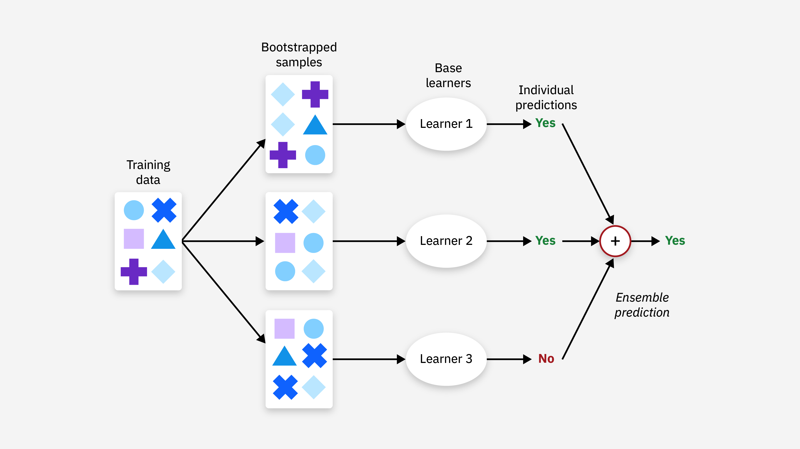
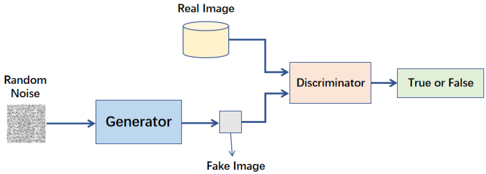
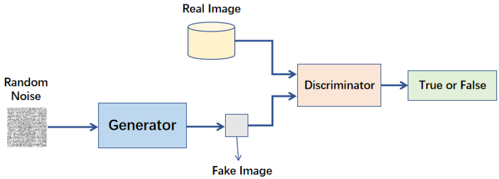

iPAS AI應用規劃師 小道消息001
人工智慧基礎概論
主題分類
1
人工智慧概念
2
資料處理與分析概念
3
機器學習概念
4
深度學習概念
5
生成式AI 與 鑑別式AI
6
AI 技術底層與架構
7
AI 應用領域
8
AI 治理與挑戰
#1
★★★★★
人工智慧 (Artificial Intelligence, AI) - 基本定義與目標
核心概念
人工智慧 (AI) 是一種旨在模擬人類智慧的技術，使機器能夠執行原本需要人類智慧才能完成的任務，如學習、推理、解決問題、感知環境等。
目標：讓機器模擬人類的思考過程和智慧行為，以處理複雜任務。 (來源: PDF Page 3-1)
目標：讓機器模擬人類的思考過程和智慧行為，以處理複雜任務。 (來源: PDF Page 3-1)
#2
★★★★
人工智慧 (AI) - 功能分類
主要類型
依照功能的不同，AI 可分為以下幾類：
- 分析型 AI：主要用於洞悉數據模式，分析和處理大量數據，以提供有價值的見解。
- 預測型 AI：基於歷史資料和數據，預測未來的趨勢和行為，常用於市場預測、風險評估等。
- 生成型 AI：近年快速發展的類型，可根據使用者輸入的提示詞 (prompt)，生成各類素材，包括文字、語音、圖像和影片。
#3
★★★★
生成式 AI (Generative AI) - 核心能力與影響
核心概念
生成式 AI 自 2022 年快速發展以來，透過使用者輸入的提示詞 (prompt)，能高效生成多種素材形式。
此技術大幅改變了許多行業的工作型態，為企業在數位化轉型與創新發展上提供了新的契機。
其最核心的能力是從大量數據中學習並生成新的、原創的內容。 (來源: PDF Page 3-1, 3-21 Q7 & Ans)
此技術大幅改變了許多行業的工作型態，為企業在數位化轉型與創新發展上提供了新的契機。
其最核心的能力是從大量數據中學習並生成新的、原創的內容。 (來源: PDF Page 3-1, 3-21 Q7 & Ans)
#4
★★★★★
人工智慧 (AI) 架構 - 技術底層
主要構成要素
AI 運作的基礎，提供必要的計算能力、數據支撐與核心演算法。主要包含：
- 資料處理與分析 (Data Processing and Analysis)：AI 的核心在於數據。包括數據清理、整合、儲存及分析。關鍵技術如 ETL (Extract, Transform, Load) 流程、資料庫管理及大數據處理平台 (如 Hadoop、Spark)。
- 演算法 (Algorithm)：AI 的邏輯基石，用於解決問題及提供決策支援。常見演算法包括迴歸分析 (Regression Analysis)、分類演算法 (Classification Algorithms)、決策樹 (Decision Tree) 與基因演算法 (Genetic Algorithm)。
- 機器學習 (Machine Learning, ML)：AI 的學習過程，透過資料訓練模型來預測或分類。常見技術如監督式學習 (Supervised Learning)、非監督式學習 (Unsupervised Learning) 與強化學習 (Reinforcement Learning)。
- 深度學習 (Deep Learning, DL)：構建於人工神經網路 (Artificial Neural Networks, ANN) 基礎之上，適用於處理非結構化數據，如語音辨識、影像處理與自然語言處理 (Natural Language Processing, NLP)。常見開發框架包括 TensorFlow、PyTorch。
- 專家系統 (Expert System)：基於規則與知識庫，模擬人類專家的決策過程，廣泛應用於醫療診斷、財務分析等專業領域。
#5
★★★
人工智慧 (AI) 架構 - 開發應用與實際運用
階段目標
- 開發應用：將基礎技術轉化為實際功能與服務的關鍵階段。涵蓋模型設計、訓練、測試及部署。目標是讓 AI 技術能夠解決特定業務需求，提升效率與價值。
- 實際運用：將 AI 技術應用落地為各行業創造價值的最終目標。包括：
- 設計行業解決方案 (如智慧醫療、智慧物流、智慧製造)。
- 打造產品與服務 (如語音助理、推薦演算法、智慧監控系統)。
- 優化業務流程 (透過 AI 實現業務流程優化，提高企業運營效率及競爭力)。
#6
★★★★
人工智慧 (AI) - 主要應用領域
跨行業應用實例
- 醫療保健：疾病診斷 (分析醫學影像如 X光片、MRI)、藥物研發 (模擬分子結構)、個人化醫療 (基於基因、生活習慣訂製方案)。
- 金融：風險評估 (分析信用記錄與行為)、欺詐檢測 (實時監控交易)、自動交易 (高頻交易)。(註: Q2/Q9 強調 AI 可應用於金融)
- 製造業：自動化生產 (機器人結合 AI)、品質控制 (影像辨識檢測缺陷)、預測性維護 (分析設備數據預防故障)。
- 交通：自動駕駛 (結合感測器與導航)、交通流量預測 (分析歷史與即時數據)。
- 娛樂：遊戲開發 (生成自適應角色/情節)、虛擬現實 (VR) (創造沉浸式環境)、內容推薦 (個人化音樂/影視推薦)。
#7
★★★★★
資料處理與分析 - 基礎概念
核心目標
資料 (數據) 處理與分析是 AI 項目中的基礎階段，旨在將原始數據轉化為高品質且適合分析的格式，並從中提取有價值的資訊。此階段包括數據蒐集、清洗、轉換與分析，目標是確保數據的品質、一致性與可用性。
(來源: PDF Page 3-4, 3-24)
#8
★★★★
數據蒐集 (Data Collection) - 結構類型
類型分類
根據數據類型與應用需求，可分為：
- 結構化數據 (Structured Data)：具有清晰且固定結構的數據，通常以行列形式儲存 (如關聯式資料庫 MySQL, PostgreSQL)。易於查詢與分析。
- 半結構化數據 (Semi-structured Data)：具有一定結構標籤，但格式靈活，不需嚴格遵循固定架構 (如 XML, JSON, CSV)。適用於描述複雜層次化數據。
- 非結構化數據 (Unstructured Data)：無固定結構，需經過處理和解析才能分析。通常以檔案形式儲存，適合多媒體或自由文本 (如圖片、影像、音訊、郵件、文章)。
#9
★★★★
數據蒐集 (Data Collection) - 常見方法
方法概述
- 問卷與調查：直接從目標受眾蒐集第一手數據 (線上/線下)。
- 自有產品數據：來自企業開發或運營的產品/設備數據 (網站、App、智慧手錶等)。
- 外部公開數據蒐集：透過 API 調用或網路爬蟲 (Web Scraping) 獲取公開數據 (政府開放平台、新聞、評論等)。
- 外部付費數據購買：向第三方數據提供商購買專業數據集。
- 網路爬蟲 (Web Scraping)：自動抓取網站公開數據 (商品價格、評論等)。
#10
★★★★★
數據清洗 (Data Cleaning) - 核心任務
目的與方法
數據清洗是提升數據品質的重要步驟，目的是解決數據中的遺缺值、重複值、錯誤值與不一致性問題，確保數據的完整性與可靠性。核心內容包括：
- 遺缺值 (Missing Value) 處理：
- 填補：使用統計方法 (平均值、中位數、眾數) 或插補法 (Interpolation) / 預測模型填補。
- 刪除：若遺缺佔比高或無法修復，直接刪除記錄 (需謹慎評估影響)。
- 重複值 (Duplicate Value) 處理：
- 識別：透過檢查主鍵、唯一識別碼或關鍵欄位確認重複。
- 刪除：保留一份正確記錄，刪除其他重複項。
- 錯誤值 (Error/Invalid Value) 處理：
- 檢測與修正：識別不符合理範圍或明顯錯誤的值 (如年齡為負數、拼寫錯誤)，並進行修正。
- 離群值 (Outlier Value) 處理：
- 識別：找出遠離大多數數據點的異常值 (可能是有意義的數據或雜訊)。
- 處理：根據業務需求和分析目標決定是否保留、修正或刪除。 (註: Q1C 強調 K-Means 易受離群值影響)
#11
★★★★
數據轉換 (Data Transformation) - 主要方法
目的與技術
將數據轉換成適合分析的格式。
- 數據格式轉換 (Data Format Transformation)：如 CSV 轉換為 JSON。
- 數據類型轉換 (Data Type Conversion)：如字串轉換為數值。
- 數據正規化/標準化 (Data Normalization / Standardization)：將數值數據縮放到特定範圍 (如 [0,1] 或均值為0標準差為1)，消除單位影響，增加模型可比性。
- 數據離散化 (Data Discretization)：將連續型數據轉換為離散的區間或類別 (如年齡分組)。
- 數據縮減 (Data Reduction)：透過特徵選擇、特徵提取或降維技術 (如 主成分分析 Principal Components Analysis, PCA) 減少數據維度或體積，提高效率。
#12
★★★★★
數據分析 (Data Analysis) - 方法分類
主要分析類型
運用統計方法、機器學習等技術，從處理後的數據中提取有用資訊與洞察。主要分為四種：
- 敘述性分析 (Descriptive Analysis)：描述數據的基本特徵和分佈情況 (使用平均值、中位數、標準差、圖表等)。
- 探索性分析 (Exploratory Analysis, EDA)：無需預設假設，透過多角度探索數據，發現模式、關聯和異常，為後續分析提供基礎。(註: Q4 強調 EDA 與 CDA 的區別)
- 診斷性分析 (Diagnostic Analysis)：探究特定現象或結果的根本原因，了解數據背後的邏輯與影響因素 (如鑽取分析、關聯分析)。
- 預測性分析 (Predictive Analysis)：使用歷史數據預測未來可能發生的事件或趨勢 (使用迴歸模型、分類模型等)。
#13
★★★★
敘述性分析 - 常用統計指標與圖表
指標與圖表詳解
常用指標：
- 平均值 (Mean): 計算簡單，代表數據平均水平，但易受極端值(離群值)影響。(PDF 3-7, 3-24)
- 中位數 (Median): 不受極端值影響，能更好反映數據中心趨勢，但對分佈變動不敏感。(PDF 3-8, 3-24, Q5 Ans 指出有極端高價時適用)
- 眾數 (Mode): 出現頻率最高的值，不受極端值影響，反映最常見類別/數值，但可能不存在或有多個。(PDF 3-25, Q10 Ans 指出某產品銷量遠高於其他時適用)
- 標準差 (Standard Deviation): 衡量數據分散程度，值越大越分散。計算相對複雜，受極端值影響。(PDF 3-8, 3-25, Q2 Ans 指出標準差大表示品質不穩)
- 百分位數 (Percentile): 描述數據分佈情況，不受極端值影響。
- 四分位數 (Quartile) / 四分位距 (Interquartile Range, IQR): IQR = Q3 - Q1，衡量數據中間 50% 的離散程度，不受極端值影響。(PDF 3-25, Q9 Ans)
- 全距 (Range): 最大值減最小值，易受極端值影響。(PDF 3-25)
- 直方圖 (Histogram): 展示連續數據的分佈情況 (集中趨勢、分散程度、是否異常)。(註: Q4 選項)
- 散佈圖 (Scatter Plot): 展示兩個變量間的關係 (線性/非線性/無關)。(註: Q4 選項)
- 折線圖 (Line Chart): 展示數據隨時間或其他連續變量的變化趨勢。
- 箱型圖/盒鬚圖 (Box Plot): 展示數據分佈（中位數、四分位數），突出離群值。(PDF 3-9)
- 雷達圖 (Radar chart): 不適合做為資料分布估計，主要用於比較不同個體在多個維度上的表現。(註: Q4 正確答案)


#14
★★★
探索性分析 (EDA) vs 驗證性分析 (Confirmatory Data Analysis, CDA)
核心差異
- 探索性分析 (EDA): 開放式探索，旨在發現數據中的模式、關係和異常，生成假設。常用於研究初期。
- 驗證性分析 (CDA): 注重驗證研究者提出的先前假設，透過更深入的分析方法（分類、分群、預測模型）進行挖掘。
#15
★★★★
資料分佈偏態
定義與判斷
描述數據分佈的不對稱性：
- 對稱分佈 (Symmetric Distribution): 平均數 ≈ 中位數 ≈ 眾數。
- 正偏態分佈 (Positively Skewed / Right Skewed): 尾巴向右延伸，平均數 > 中位數 > 眾數。 (因為少數高值拉高平均數)
- 負偏態分佈 (Negatively Skewed / Left Skewed): 尾巴向左延伸，平均數 < 中位數 < 眾數。 (因為少數低值拉低平均數)
- 平均數 < 中位數: 通常表示負偏態。
- 平均數 > 中位數: 通常表示正偏態。

#16
★★★
假設檢定 (Hypothesis Testing) - P值意義
P值解釋
在假設檢定中：
- 虛無假設 (Null Hypothesis, H0): 通常表示沒有效果或沒有差異。
- 對立假設 (Alternative Hypothesis, Ha / H1): 表示存在效果或差異。
- 顯著水準 (Significance Level, α): 事前設定的閾值，代表容忍犯第一型錯誤 (Type I Error - 拒絕真實的H0) 的機率上限 (常用 0.05)。
- P值 (p-value): 在假設H0為真的前提下，觀察到目前樣本結果或更極端結果的機率。
- 若 p ≤ α：拒絕 H0。表示觀察到的結果在H0為真的情況下非常不可能發生 (結果具統計顯著性)。
- 若 p > α：無法拒絕 H0 (或接受 H0)。表示觀察到的結果在H0為真的情況下是可能發生的。
#17
★★★★★
機器學習 (Machine Learning, ML) - 基本定義與類型
核心概念
機器學習 (ML) 是一種透過數據訓練模型，使機器具備預測與分類能力的技術，常應用於文字、語音、圖像辨識等領域。
是 AI 的核心支柱之一，讓計算機系統能從經驗中學習而無需明確編程。 主要類型：
是 AI 的核心支柱之一，讓計算機系統能從經驗中學習而無需明確編程。 主要類型：
- 監督式學習 (Supervised Learning)：使用帶有標記 (Labeled Data) 的數據進行訓練，學習輸入特徵與輸出標記間的映射關係。主要任務是分類 (Classification) 和迴歸 (Regression)。(註: Q2 強調標記訊息)
- 非監督式學習 (Unsupervised Learning)：使用未標記的數據進行訓練，自動從數據中發掘潛在模式、結構或分群 (Clustering)。常用於資料探索、特徵提取和降維。
- 強化學習 (Reinforcement Learning, RL)：基於「回饋機制」的學習方法。代理 (Agent) 透過與環境互動，根據獲得的獎勵 (Reward) 或懲罰來調整策略，以最大化累積獎勵。核心是試錯學習 (Trial-and-Error) 和長期規劃。適合動態、複雜環境中的決策問題 (如下圍棋、自動駕駛)。(註: Q1 正確答案)
#18
★★★★
機器學習 - 演算法範例
常見演算法
- 線性迴歸 (Linear Regression): 預測連續數值型輸出。簡單易懂，但只能捕捉線性關係。(註: Q6 適合銷售額預測)
- 邏輯迴歸 (Logistic Regression): 雖然名為迴歸，但實際是二元分類演算法。使用 Sigmoid 函數將輸出轉為 0 到 1 的機率值。
- K-最近鄰演算法 (K-Nearest Neighbors, KNN): 基於實例的學習。對新樣本，找出訓練集中最接近的 K 個鄰居，根據鄰居的類別（分類）或值（迴歸）進行預測。
- 決策樹 (Decision Tree): 基於樹狀結構進行決策。易於理解和解釋，具有良好的可解釋性。(註: Q7 優勢)
- 隨機森林 (Random Forest): 集成學習方法，構建多棵決策樹並投票/平均。改進單一決策樹的穩定性和準確性，減少過擬合。(註: Q10 方法)
- 支援向量機 (Support Vector Machine, SVM): 強大的分類模型，尋找最大化類別間隔的超平面。可透過核函數處理非線性問題。
- K-均值聚類 (K-Means Clustering): 非監督式學習演算法，將數據分為 K 個群組。K 代表希望劃分的群組數量。對初始中心點敏感，易受離群值影響，不適合非球形或密度不均的群集。(註: Q5 K的意義, Q1/Q3 特點)
- 集成學習 (Ensemble Methods): 結合多個模型以提高預測準確性。如 隨機森林 (Random Forest), 梯度提升機 (Gradient Boosting Machine, GBM), 極限梯度提升 (eXtreme Gradient Boosting, XGBoost)。



#19
★★★★★
機器學習 核心過程
主要階段
機器學習的實現是一個循序漸進的過程，核心流程包括：
- 數據處理: 基礎步驟，包括數據蒐集、清洗、標準化、特徵選擇/降維等。數據品質直接影響模型效果。(PDF 3-39)
- 模型訓練: 核心階段。選擇合適的演算法，將處理好的數據輸入模型，透過調整參數學習數據中的模式。(PDF 3-41)
- 模型評估與優化: 驗證階段。使用評估指標 (如準確率、F1分數、MSE) 衡量模型在測試數據上的表現。透過交叉驗證 (Cross-Validation) 評估穩健性，並進行超參數調整 (Hyperparameter Tuning) 以優化性能。(PDF 3-42, 3-43, 3-44 Q4 Ans)
#20
★★★★
過擬合 (Overfitting) - 防範策略
定義與解決方法
過擬合指模型在訓練數據上表現優異，但在未見過的測試數據上表現不佳的現象。主因是模型過度學習了訓練數據中的雜訊或特定模式。(註: Q3 正確答案)
 防範策略：
防範策略：
防範策略：
- 正則化 (Regularization): 在損失函數中添加懲罰項 (如 L1, L2 正則化)，限制模型複雜度。(註: Q6 正確答案)
- 早期停止 (Early Stopping): 在驗證集上的表現開始下降時停止訓練。
- 數據增強 (Data Augmentation): 透過隨機變換 (旋轉、翻轉等) 擴展訓練數據集，提升模型泛化能力。
- 交叉驗證 (Cross-Validation): 評估模型穩健性和泛化能力，減少過擬合風險。(註: Q4 正確答案)
- 使用更簡單的模型或減少特徵數量。


#21
★★★
梯度下降法 (Gradient Descent)
核心作用
梯度下降法及其變種是機器學習中最常用的優化演算法。其主要作用是透過計算損失函數相對於模型參數的梯度 (導數)，逐步調整參數，以最小化損失函數。(註: Q5 正確答案)
常見變種：

常見變種：
- 批次梯度下降 (Batch Gradient Descent, BGD): 使用整個數據集計算梯度。
- 隨機梯度下降 (Stochastic Gradient Descent, SGD): 每次迭代僅使用一個樣本計算梯度，速度快但不穩定。
- 小批次梯度下降 (Mini-batch Gradient Descent): 介於 BGD 和 SGD 之間，每次使用一小批樣本。
- Adam (Adaptive Moment Estimation): 自適應學習率的優化算法，結合動量法和 RMSProp。

#22
★★★★★
深度學習 (Deep Learning, DL) - 基本概念
核心特點
深度學習是機器學習的一個子領域，其核心是使用具有多層結構的人工神經網路 (ANN)。
特點：

(來源: PDF Page 3-3, 3-14, 3-45 Q8 Ans)
特點：
- 從大量數據中自動學習特徵，無需人工設計。
- 擅長處理複雜、高維度、非結構化數據 (如文本、語音、影像)。
- 透過多層網絡結構提取深層次、抽象的特徵。(註: Q8 主要區別)
- 在自然語言處理、電腦視覺、語音辨識等領域表現突出。
(來源: PDF Page 3-3, 3-14, 3-45 Q8 Ans)
#23
★★★★
卷積神經網路 (Convolutional Neural Networks, CNN)
結構與應用
卷積神經網路是深度學習中特別擅長處理圖像數據的模型。

(來源: PDF Page 3-14, 3-15)
- 結構組成:
- 卷積層 (Convolutional Layer): 透過卷積運算提取局部特徵 (邊緣、紋理)。
- 池化層 (Pooling Layer): 降低數據維度 (降維操作)，減少計算量，防止過擬合。
- 全連接層 (Fully Connected Layer): 將提取的特徵映射到輸出空間，進行分類或迴歸。
- 優點: 適合處理高維數據(圖像)，參數共享減少計算量，能提取層次化特徵。
- 應用場景: 影像辨識 (人臉辨識、手寫數字分類 MNIST)、物件偵測、圖像分割 (醫學影像病變檢測)。
(來源: PDF Page 3-14, 3-15)
#24
★★★★
循環神經網路 (Recurrent Neural Networks, RNN)
結構與應用
循環神經網路是專為處理序列數據 (如文本、語音、時間序列) 而設計的深度學習模型。
- 工作原理: 網路中存在循環連接，使得模型可以記憶序列中之前的資訊，捕捉數據的時間依賴關係。
- 優點: 能有效捕捉序列數據中的長期依賴關係，支持變長序列處理。
- 缺點: 訓練過程易出現梯度消失或梯度爆炸問題，處理長序列時計算效率較低。
- 改進版本:
- 長短期記憶網路 (Long Short-Term Memory, LSTM): 透過引入遺忘門 (forget gate)、輸入門 (input gate) 和輸出門 (output gate) 有效解決梯度消失問題。
- 門控循環單元 (Gated Recurrent Unit, GRU): 結構比 LSTM 簡單，效果相近。


- 應用場景: 自然語言處理 (機器翻譯、文本生成)、語音辨識、時間序列分析 (股票價格預測)。

#25
★★★★★
鑑別式 AI (Discriminative AI, DAI) vs 生成式 AI (Generative AI, GAI)
核心區別
兩者是 AI 領域的重要分支，代表數據分析與數據創造的核心方向：
- 鑑別式 AI (DAI):
- 目標: 學習數據特徵與目標標記之間的條件概率 P(y|x)，即給定輸入 x，預測輸出 y 的機率。
- 核心: 區分類別或進行數值預測，找到決策邊界。
- 任務: 分類、迴歸、模式識別。
- 輸出: 分類標籤或數值預測。
- 範例: SVM, 邏輯迴歸, 決策樹, 大多數 CNN/ RNN 用於分類/迴歸時。
- 主要目標: 分類或迴歸數據 (判斷/預測)。(註: Q1 正確答案)
- 生成式 AI (GAI):
- 目標: 學習數據的聯合分佈 P(x,y) 或邊緣分佈 P(x)，理解數據如何生成。
- 核心: 模擬真實數據分佈，生成新的、類似的數據樣本。
- 任務: 圖像生成、文本生成、數據增強、異常檢測。
- 輸出: 新的數據樣本 (文本、圖像、語音等)。
- 範例: 生成對抗網路 (GAN), 變分自編碼器 (VAE), 擴散模型 (Diffusion Models), ChatGPT, DALL-E。(註: Q2 正確答案)
- 主要目標: 生成新的內容。
#26
★★★★
生成對抗網路 (Generative Adversarial Networks, GAN)
核心組件與原理
生成對抗網路 (GAN) 是深度學習中用於生成數據的強大模型。
 (來源: PDF Page 3-16, 3-17, 3-52, 3-60 Q4 Ans, 3-61 Q8 Ans, 3-61 Q9 Ans)]
- 核心組件: (註: Q4 正確答案)
- 生成器 (Generator): 接收隨機雜訊作為輸入，生成模擬的數據樣本。目標是「欺騙」判別器。
- 判別器 (Discriminator): 負責區分輸入數據是真實的還是由生成器生成的。目標是最大化判斷準確性。
- 工作原理: 透過對抗學習 (Adversarial Learning) 共同進步。生成器努力生成更逼真的數據，判別器努力提高辨別能力。這個過程促使生成器最終能生成高品質的數據樣本。(註: Q9 正確答案)
- 優點: 能生成高品質、逼真的數據樣本。
- 缺點: 訓練過程不穩定，可能出現模式崩潰 (Mode Collapse)。需要大量計算資源。
- 解決訓練不穩定方法: 可採用改進型 GAN，如 Wasserstein GAN (WGAN)。(註: Q8 正確答案)
- 應用場景: 圖像生成 (草圖轉寫實圖)、文本生成、語音合成、風格遷移、醫療影像生成。
 (來源: PDF Page 3-16, 3-17, 3-52, 3-60 Q4 Ans, 3-61 Q8 Ans, 3-61 Q9 Ans)]
#27
★★★
變分自編碼器 (Variational Autoencoders, VAE)
原理與應用
變分自編碼器 (VAE) 是一種基於概率生成模型的技術。
 (來源: PDF Page 3-53)
(來源: PDF Page 3-53)
- 原理: 將數據映射到隱變量空間 (Latent Space)，並從該空間重建原始數據。引入隨機變量和正則化，平衡生成能力和學習穩定性。
- 組件: 編碼器 (Encoder) 壓縮數據到隱空間，解碼器 (Decoder) 從隱空間重建數據。
- 應用: 數據修復與重建 (修補圖像/影片)、異常檢測、數據生成 (特別適合需平滑過渡和隱變量控制的場景)。
(來源: PDF Page 3-53)
#28
★★★
擴散模型 (Diffusion Models)
原理與應用
擴散模型 是一種基於逐步添加與去除雜訊的數據生成方法。
 (來源: PDF Page 3-54)
(來源: PDF Page 3-54)
- 原理:
- 前向過程 (加噪): 在訓練階段，逐步向真實數據添加隨機雜訊，直至其變為純高斯雜訊。
- 反向過程 (去噪): 在生成階段，模型學習從純雜訊開始，逐步去除雜訊，最終重建出真實感的數據樣本。
- 應用: 高品質圖像生成、醫療影像合成、文本到圖像生成。
(來源: PDF Page 3-54)
#29
★★★★
生成式 AI 訓練過程 (兩階段)
訓練與微調
生成式 AI (特別是大型語言模型) 的訓練通常分為兩個主要階段：
- 預訓練階段 (Pre-training Phase):
- 目標: 在大量、未標記的文本數據上進行訓練，學習語言的普遍規律和模式。
- 方法: 通常使用自監督學習任務，如預測下一個詞或掩碼語言模型。
- 結果: 獲得一個具有基礎語言理解和生成能力的基礎模型 (Foundation Model)。
- 關鍵: 數據準備 (蒐集、清洗、預處理) 和模型選擇/搭建 (GAN, VAE, Transformer 等)。
- 微調階段 (Fine-tuning Phase):
- 目標: 在特定領域或任務的較小、有標記數據集上進一步訓練，以提升模型在特定任務上的表現。
- 方法: 調整超參數、添加特定任務層、使用特定數據集進行精調、數據增強。
- 結果: 模型更適應特定應用場景。
#30
★★★★
鑑別式 AI 與 生成式 AI 的整合應用
協同效應與價值
整合 鑑別式 AI 和 生成式 AI 能發揮協同效應，解決更複雜的問題：
- 數據增強與分析: 生成式 AI 生成多樣化、逼真的合成數據 (尤其在數據稀缺時)，鑑別式 AI 則利用這些增強數據進行更準確的分析和預測。(註: Q9 主要解決數據稀缺/不平衡問題)
- 多模態數據處理: 生成式 AI 負責跨模態生成與轉換，鑑別式 AI 負責多模態數據的精確分類與決策。
- 提升模型泛化能力: 生成的多樣化數據有助於鑑別式模型學習更廣泛的模式，提升在未知情境下的表現。
- 即時分析與回饋: 生成式 AI 模擬場景，鑑別式 AI 進行即時分析，系統根據分析結果調整策略 (如自動駕駛、安全防禦)。
- 系統靈活性與適應性: 整合系統能根據不同需求動態調整數據生成與決策流程。
- 醫療影像診斷: GAN 生成合成病理影像 + CNN 分類診斷。(註: Q6 整合目的)
- 自動駕駛: 生成式 AI 模擬各種路況 + 鑑別式 AI 識別環境並決策。(註: Q7 典型案例)
- 智慧客服: 生成式 AI 生成回應 + 鑑別式 AI 過濾不當內容。
- 內容生成與審核: 生成式 AI 創作 + 鑑別式 AI 審核合規性。
#31
★★★★
AI 挑戰 - 鑑別式 AI
主要挑戰
- 數據偏見 (Bias in Data): 模型可能學習到訓練數據中的偏見，影響公平性與準確性。
- 過擬合 (Overfitting): 模型過度擬合訓練數據，導致泛化能力不足。
- 標記成本 (Labeling Cost): 監督式學習需要大量標記數據，成本高昂。
#32
★★★★
AI 挑戰 - 生成式 AI
主要挑戰
- 內容真實性 (Authenticity of Generated Content): 生成內容可能包含不準確或虛構的信息 (如假新聞)。
- 可控性 (Controlability): 模型輸出內容的可控性較低，難以精確生成符合特定需求的結果。
- 計算成本 (Computational Cost): 訓練大型生成模型需要大量計算資源。
- 訓練穩定性: 如 GAN 的模式崩潰、梯度消失/爆炸問題。
- 數據偏差與公平性: 生成的數據可能放大訓練數據中的偏差。
#33
★★★★
AI 治理 (AI Governance) 與 透明性
重要性與措施
AI 治理旨在確保 AI 技術的開發與應用符合倫理、法律和社會規範。
透明性是 AI 治理 的重要原則之一。提升 AI 系統透明性的措施包括：
透明性是 AI 治理 的重要原則之一。提升 AI 系統透明性的措施包括：
- 公開決策流程: 定期或不定期發布報告、技術文件或網站資訊，揭露 AI 系統在各決策環節的流程。(註: Q3 正確答案)
- 可解釋性 AI (Explainable AI, XAI): 開發技術讓模型的決策過程更容易被人類理解。
- 數據來源與處理說明: 說明訓練數據的來源及處理方式。
- 統一發展標準: 確保不同國家技術應用的一致性和互操作性。
- 避免技術濫用: 透過跨國監管和政策協調，減少倫理與安全風險。
- 促進技術轉移: 幫助各國共享資源，縮小數位鴻溝。
#34
★★★
整合 鑑別式與生成式 AI 的未來方向
關鍵趨勢
未來整合 鑑別式 AI 與 生成式 AI 的關鍵方向是開發更高效的整合框架，旨在提升兩者模型的協同能力，實現更高效的應用。(註: Q10 正確答案)
- 需要設計靈活且高效的系統架構，促進模型間的通訊與數據共享。
- 開發動態學習框架，使系統能根據數據分佈變化即時調整。
沒有找到符合條件的重點。
↑